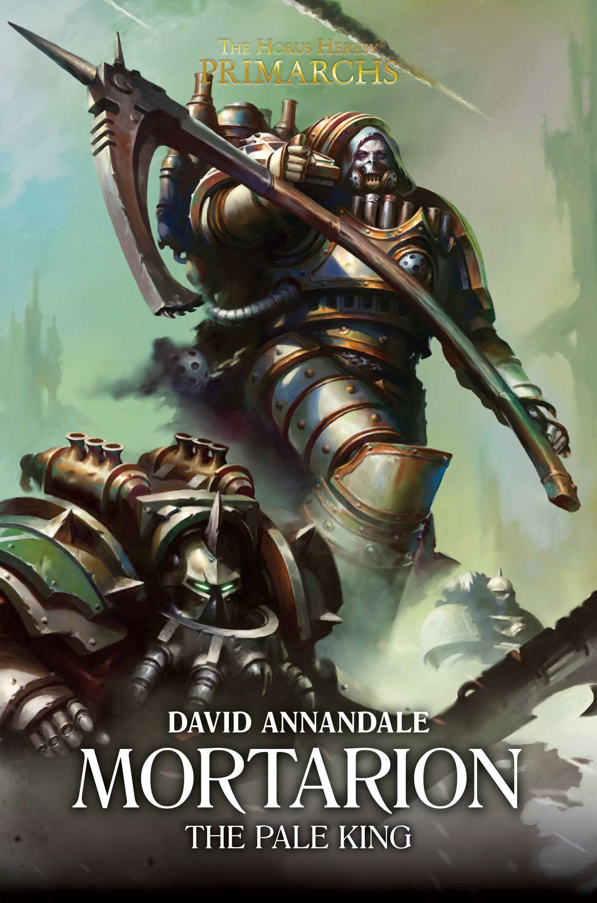

MORTARION: THE PALE KING

Author: David Annandale
Format: Novel
Mortarion leads the Death Guard against the tyrants of Galaspar. The brutality of his campaign appals even the Imperium, and two fellow primarchs come to question his methods.
Introduction reviewed against Black Library’s description on 2026-09-27. The publisher page may contain spoilers.
Publication facts: publisher source, checked 2026-09-26.
Open this work in the interactive Archive to track reading progress and explore related works.
Take the three-question memory check for this work. The quiz contains story spoilers.